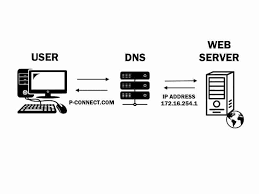

A domain name server takes the domain name and looks up its equivalent network address. The user's request is then fowarded to the server that resides at that network address.
Every website on the internet has a network address, consisting of four sets of three digits. websites are accessed using domain names. Domain names are much easier for users to remember

A domain name server translates a domain name into an internet address.